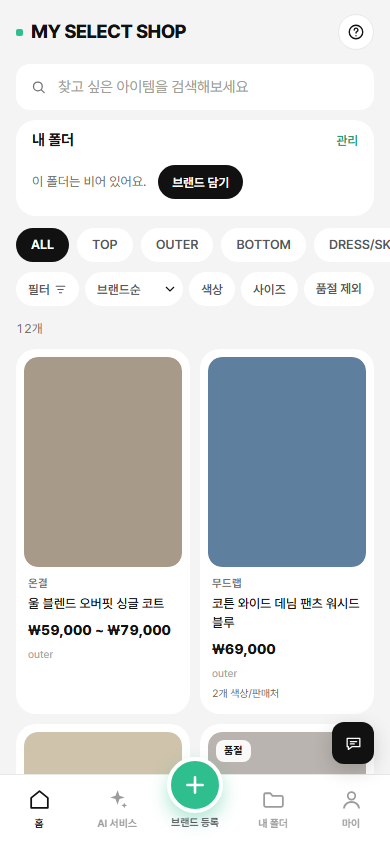

왼쪽이 지금 화면, 오른쪽 3개가 시안입니다. 시안 화면 안은 손가락(마우스 휠)으로 아래로 내려 볼 수 있어요. 기능과 정보는 모두 지금과 같고 모양만 다릅니다.
현재 사이트(가짜 상품 데이터로 찍은 사진)

조용한 편집숍. 카드·그림자 없이 사진이 주인공, 글자는 작고 차분하게.
패션 잡지. 큰 제목·굵은 글자, 흑백에 주황빨강 포인트 하나, 첫 상품을 크게.
밝고 친근한 앱. 둥근 흰 카드, 지금 초록색 유지, 분류도 한글로.